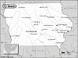

Iowa

Attention: If you use this or any of the AIRS lists in any state, please report any bad phone numbers or emails to the webmaster. This is the responsibility of all users, including you. Thank you!
Chuck Hill
(hilltech@netins.net)
CROSSROADS:US 218 & US 20
Dysart, 52224
PHONE:(319) 476-3348
ONLY CALL IF EMERGENCY
BUSES:'78 bus, 85 Vanagon, 86 Vanagon
COMMENTS: I know a fair amount about both the air cooled and water cooled vans. Have some
spare parts for troubleshooting.
AVAILABLE:Mon-fri, daytime hours
familiar with:fuel injection, type4 engine
I CAN PROVIDE THE FOLLOWING SERVICES:
INTERNET ACCESS
TOOLS
TELEPHONE ACCESS
MECHANICAL HELP
SPACE TO WORK ON BUS
PARTS AVAILABLE
TRANSPORTATION HELP
Favorite beer type:Anything cold
Mike Noble
(jjmnoble@msn.com)
CROSSROADS: US 218, I-280, & I-80 IC to Davenport
North Liberty, 52776
PHONE: (319) 665-3192
VW'S: 68 & 70 Transporters
COMMENTS: I'll help however I can. I've got manuals, tools, and limited spare parts. What I dont
know, we can figure out together.
AVAILABLE:
Evenings and weekends best but call anytime with an emergency.
familiar with: 1600, dual carbs
I CAN PROVIDE THE FOLLOWING SERVICES:
INTERNET ACCESS
TOOLS
TELEPHONE ACCESS
TRANSPORTATION HELP
MECHANICAL HELP
SPACE TO WORK ON BUS
STORAGE SPACE
PARTS AVAILABLE
COFFEE/TALK
Favorite beer type: Micro brands
Al (Alan) Brase
albeeee@mchsi.com
CROSSROADS:US 20 & 63&218
Cedar Falls, 50613
PHONE:319-961-0599
BUSES:58 to 87 type 2's and a few bugs
COMMENTS: have tow rope and vehicle and secure area to fix, rest, leave a while. Also a pretty good mechanic, but not
really looking for more work. also have a lot of spares
AVAILABLE:most times 8 am to midnite
familiar with:36hp,1500,1600,dual carbs,fuel injection,type4 engine
I CAN PROVIDE THE FOLLOWING SERVICES:
INTERNET ACCESS
TOOLS
TELEPHONE ACCESS
MECHANICAL HELP
SPACE TO WORK ON BUS
STORAGE SPACE
PARTS AVAILABLE
COFFEE/TALK
TRANSPORTATION HELP
CAMPING SPOT: 2 nights
Favorite beer type:Thick and chewy
eric
(ringo420@hotmail.com)
CROSSROADS: ringbloom
harlan, 51537
PHONE: 712.799.4270
BUSES: '73 westfalia. 73' superbeetle
COMMENTS: i'm not always here but if i am i'll do whatever i can, k?
familiar with: 1600, type4 engine
I CAN PROVIDE THE FOLLOWING SERVICES:
INTERNET ACCESS
TOOLS
TELEPHONE ACCESS
SPARE ROOM
MECHANICAL HELP
SPACE TO WORK ON BUS
STORAGE SPACE
COFFEE/TALK
TRANSPORTATION HELP
CAMPING SPOT: MOVE IN!!! :)
Favorite beer type: Micro brands
shawn Hunt
(deluxbus@hotmail.com)
CROSSROADS: hwy 34 - hwy 63
ottumwa, 52501
PHONE: 515- 684-0155
VW'S: 1960 Deluxe
COMMENTS: Not a mechanic but I have tools and manuals and will help how I can.
AVAILABLE: anytime after 5pm..weekends if around.
familiar with: 1600
I CAN PROVIDE THE FOLLOWING SERVICES:
INTERNET ACCESS
TOOLS
TELEPHONE ACCESS
TRANSPORTATION HELP
SPACE TO WORK ON BUS
STORAGE SPACE
COFFEE/TALK
CAMPING SPOT: 4 nights or more
Favorite beer type: Anything cold
Jeremy Johannsen
(johanns@wctatel.net)
CROSSROADS: hwy 18 I-35
Crystal Lake, 50432
PHONE: 641-565-3410
VW'S: '78 Westy, '85 Jetta
familiar with: 1600, fuel injection
I CAN PROVIDE THE FOLLOWING SERVICES:
INTERNET ACCESS
TOOLS
TELEPHONE ACCESS
TRANSPORTATION HELP
MECHANICAL HELP
SPACE TO WORK ON BUS
COFFEE/TALK: 2 nights
SPARE ROOM: 1 night
Favorite beer type: Micro brands
Kelly
(GrooveyTuesday@aol.com)
CROSSROADS: Highway 30 and I-29
Missouri Valley, 51555
PHONE: (712) 642-2954
VW'S: 1978 VW Transporter own 3 years
COMMENTS: I am a 25 year single male. I am a youth pastor and have been for 5 years.
AVAILABLE: I am available Mon-Sun easiest to get a hold of me in the evenings
familiar with: 1776+, fuel injection
I CAN PROVIDE THE FOLLOWING SERVICES:
INTERNET ACCESS
TELEPHONE ACCESS
COFFEE/TALK
CAMPING SPOT: 2 nights
Favorite beer type: Beer is for wimps!
Donald Baxter
EMAIL: onanov@mindspring.com
CROSSROADS: US 6 US 218 I-80
Iowa City, 52246
PHONE: 319 337 0494
ONLY CALL IF EMERGENCY
VW'S: 1985 Vanagon 1996 Passat VR6
I CAN PROVIDE THE FOLLOWING SERVICES:
INTERNET ACCESS
TOOLS
TELEPHONE ACCESS
TRANSPORTATION HELP
MECHANICAL HELP
SPACE TO WORK ON BUS
CAMPING: 1 night
Favorite beer type: Thick and chewy
Wade Rodman
EMAIL: volkswade_at_hotmail_dot_com
CROSSROADS: I-80 and I-29
Council Bluffs, 51503
PHONE: 712 322-5835
VW'S: 1966 type II Panel, 1979 Westfalia, 1998 New Beetle
COMMENTS: Right off interstate We love to have company and will try to help anyone who
needs it we have room for lots of people but only one bath so if you don't mind waiting I
also have an arcade and pool table so come over and have fun
AVAILABLE: We are normanly home evenings but if not leave a message on the machine
I am familiar with: 1600, 1776+, fuel injection, type4 engine
I CAN PROVIDE THE FOLLOWING SERVICES:
INTERNET ACCESS
TOOLS
TELEPHONE ACCESS
TRANSPORTATION HELP
MECHANICAL HELP
SPACE TO WORK ON BUS
SOME PARTS
COFFEE/TALK
CAMPING: 1 night
SPARE ROOM: 2 nights
Favorite beer type: Anything cold
Jeremy Witt
EMAIL: jeremymary@yahoo.com
CROSSROADS: I-35 and US 122
Mason City, 50401
VW'S: 1978 Westy Deluxe; 1997 Jetta GL; 2000 Beetle GLX
COMMENTS: I'm not very mechanically inclined, but I will help out in any way
that I can!
AVAILABLE: Nights & Weekends
I am familiar with: fuel injection
I CAN PROVIDE THE FOLLOWING SERVICES
INTERNET ACCESS
TOOLS
TELEPHONE ACCESS
TRANSPORTATION HELP
MECHANICAL HELP
SPACE TO WORK ON BUS
SOME PARTS
COFFEE/TALK
CAMPING: 1 night
SPARE ROOM: none
Favorite beer type: Anything cold
tintman
EMAIL: tintman@mchsi.com
CROSSROADS: I-30 and I-380
CITY: hiawatha, 52233
VW'S: 1968 campmobile 1970 transporter 1988 vanagon wolfsburg
COMMENTS: hope i can help.
AVAILABLE: almost any time contact by email first
I am familiar with: 1600
I CAN PROVIDE THE FOLLOWING SERVICES
INTERNET ACCESS
TOOLS
TELEPHONE ACCESS
TRANSPORTATION HELP
MECHANICAL HELP
SPACE TO WORK ON BUS
STORAGE SPACE
SOME PARTS
COFFEE/TALK
CAMPING: 2 nights
SPARE ROOM: none
Favorite beer type: Beer is for wimps!
Gary Kelley
EMAIL: roadhogkelley_at_hotmail_dot_com
CROSSROADS: Intersection of Hwy 2 & 71
Clarinda, 51632
PHONE: 712-542-4424
VW'S: 1980 Westfalia
COMMENTS: Available any time.
I am familiar with: type4 engine
I CAN PROVIDE THE FOLLOWING SERVICES
INTERNET ACCESS
TOOLS
TELEPHONE ACCESS
TRANSPORTATION HELP
STORAGE SPACE
COFFEE/TALK
CAMPING: 4 nights or more
SPARE ROOM: 4 nights or more
Favorite beer type: Commercial brands
Munchy71
EMAIL: munchy71_at_hotmail_dot_com
CROSSROADS: I-80 & I-35
Des Moines, 50310
VW'S: '87 westy
AVAILABLE: weekdays after 6 pm & weekends
I am familiar with: wasserboxer
I CAN PROVIDE THE FOLLOWING SERVICES
INTERNET ACCESS
TOOLS
TELEPHONE ACCESS
TRANSPORTATION HELP
SPACE TO WORK ON BUS
COFFEE/TALK
CAMPING: 2 nights
SPARE ROOM: 2 nights
Favorite beer type: Thick and chewy
Russ Wolfe
EMAIL: russw_at_classicvw_dot_org
CROSSROADS: I-35 & Highway 92
CITY: Indianola, 50125
PHONE: 515-981-5936
VW'S: '71 Fastback, '66 Fastback, '65 Bug
COMMENTS: Factory trained VW mechanic 1964-1979. Have worked on VW's on my own
since then. I have a 30x45ft heated shop for year round use, and area to store
cars outside. I have a pretty large collection of parts both new and used.
AVAILABLE: evenings and weekends
I am familiar with: 25hp, 36hp, Bastard40hp, 1200, 1300, 1500, 1600, 1776+, dual
carbs, fuel injection, type4 engine, diesel, conversions
I CAN PROVIDE THE FOLLOWING SERVICES
INTERNET ACCESS
TOOLS
TELEPHONE ACCESS
MECHANICAL HELP
SPACE TO WORK ON BUS
STORAGE SPACE
SOME PARTS
COFFEE/TALK
CAMPING: 4 nights or more
SPARE ROOM: 4 nights or more
Favorite beer type: Anything cold
Nathan "Tower" James Lein
EMAIL: wimi69_at_hotmail_dot_com
CROSSROADS: Highway 3, 150, 281; north of 20
CITY: Oelwein
ZIP CODE: 50662
PHONE: 319.415.2574
VW'S: 1997 Jetta TDI, 1972 bus and a 2004 Passat W8
COMMENTS: I live close a few EXPERT VW mechanics, so if I cannot personally help
you with a problem one of them certainly can.
AVAILABLE: Varies: call or email and I'll do my best to accomodate you!
I am familiar with: diesel, 1776+
I CAN PROVIDE THE FOLLOWING SERVICES
INTERNET ACCESS
TOOLS
TELEPHONE ACCESS
TRANSPORTATION HELP
MECHANICAL HELP
SPACE TO WORK ON BUS
STORAGE SPACE
SOME PARTS
COFFEE/TALK
CAMPING: 4 nights or more
SPARE ROOM: MOVE IN!!! :)
Favorite beer type: Anything cold
TROY WAUGH
EMAIL: busdude71_at_aol_dot_com
CROSSROADS: Des Moines
CITY: Ankeny
ZIP CODE: 50021
PHONE: (515)964-1508
VW'S: 1971 westfalia
COMMENTS: I am a fellow volkswagen enthusiast who would be willing to help other
enthusiast who are in trouble.I don't have a garage but have access to one plus
a few extra parts laying around.
AVAILABLE: any afternoon after 2:00 pm until 9:00 pm
I am familiar with: 1600
I CAN PROVIDE THE FOLLOWING SERVICES
INTERNET ACCESS
TELEPHONE ACCESS
MECHANICAL HELP
SPACE TO WORK ON BUS
SOME PARTS
COFFEE/TALK
CAMPING: none
SPARE ROOM: none
Favorite beer type: Anything cold
eric ghan
EMAIL: ericdeadhead_at_aol_dot_com
CROSSROADS: I80 and I35 PHONE: 5152496059
VW'S: 1967 westy
I am familiar with: 25hp, 36hp, Bastard40hp, 1200, 1300, 1500, 1600, 1776+,
type4 engine
I CAN PROVIDE THE FOLLOWING SERVICES:
INTERNET ACCESS
TOOLS
TELEPHONE ACCESS
TRANSPORTATION HELP
MECHANICAL HELP
SPACE TO WORK ON BUS
SOME PARTS
CAMPING: 1 night SPARE ROOM: none
Favorite beer type: Anything cold
Andrew Philbrick
EMAIL: herrschildkrote_at_gmail_dot_com
CROSSROADS: I-80 & N I-380
CITY: Iowa City
ZIP CODE: 52242
PHONE: 712-326-5905
VW'S: 1974 Transporter
COMMENTS: I'm a student at the University of Iowa. I'm in Iowa City for
most of the year but you may catch me in Council Bluffs, IA as well. Give
me a call and I try my best to get you going again.
AVAILABLE: Anytime
I am familiar with: 1600, type4 engine
I CAN PROVIDE THE FOLLOWING SERVICES:
INTERNET ACCESS
TOOLS
TELEPHONE ACCESS
MECHANICAL HELP
COFFEE/TALK
CAMPING: none SPARE ROOM: none
Favorite beer type: Anything cold
Kendra Anthony
EMAIL: kanthony2006_at_hotmail_dot_com
CITY: Creston
ZIP CODE: 50801
PHONE: 641-344-2012
VW'S: 78 Bus
AVAILABLE: M-F evenings,
Weekends anytime
I CAN PROVIDE THE FOLLOWING SERVICES
INTERNET ACCESS
TOOLS
TELEPHONE ACCESS
TRANSPORTATION HELP
SPACE TO WORK ON BUS
CAMPING: none SPARE ROOM: 2 nights
Favorite beer type: I don't drink
Scott Stulken
EMAIL: scott_at_stulken_period_com
CROSSROADS: I-380, Hwy 30, Hwy 151
CITY: Cedar Rapids
ZIP CODE: 52402
VW'S: 1974 Thing
COMMENTS: I'm a 24 year old software engineer. What I lack in technical
knowledge/experience, I make up in enthusiasm and a willingness to learn.
You can't have my phone number, but I check my email often. :^)
AVAILABLE: Afternoons M-F, weekends are generally good.
I am familiar with: 1600
I CAN PROVIDE THE FOLLOWING SERVICES
INTERNET ACCESS
TELEPHONE ACCESS
TRANSPORTATION HELP
MECHANICAL HELP
COFFEE/TALK
CAMPING: none SPARE ROOM: 1 night
Favorite beer type: Thick and chewy
Rob
EMAIL: aircooledcamper_at_msn_dot_com
CROSSROADS: I 80 and I 35
CITY: Des Moines
ZIP CODE: 50310
PHONE: 515-252-8698
VW'S: 1969 Bus
COMMENTS: I'm not a mechanic and won't rebuild your brakes, for example, (as if
I had that kind of insurance anyway) but I may have some useful advice, some
tools, and a few parts if you are willing to do the work yourself and maybe have
me lend an extra hand.
Depending on my schedule, I might be able to provide a driveway to work in, but
only for a quick fix.
I can't guarantee an overnight place, our schedule varies too much. There are
hotels nearby though. :)
AVAILABLE: Variable. Just try me.
I am familiar with: 1600
I CAN PROVIDE THE FOLLOWING SERVICES
INTERNET ACCESS
TOOLS
TELEPHONE ACCESS
TRANSPORTATION HELP
MECHANICAL HELP
SPACE TO WORK ON BUS
SOME PARTS
COFFEE/TALK
CAMPING: none SPARE ROOM: none
Favorite beer type: I don't drink
Matt Janssen
EMAIL: mattjanssen_at_midwestcreamery_dot_com
CROSSROADS: MLK and 235
CITY: Des Moines
ZIP CODE: 50314
PHONE: 515-720-7136
VW'S: Westy 1977
COMMENTS: Feel free to call me! I am a new vw owner and love to talk and hear
about vw's. I am willing to lend a hand or hear your stories. I am sorry
we don't have a place for people to stay but we just moved to an Apt. I
have a place to work on vw's for a short period of time.
AVAILABLE: Mon- Fri 8am-12am
I am familiar with: fuel injection
I CAN PROVIDE THE FOLLOWING SERVICES
INTERNET ACCESS
TOOLS
TELEPHONE ACCESS
TRANSPORTATION HELP
MECHANICAL HELP
SOME PARTS
COFFEE/TALK
CAMPING: none SPARE ROOM: none
Favorite beer type: Non Alcoholic
Joel Fluit
EMAIL: joel_fluit at hotmail dot com
CROSSROADS: Highway 60 and 18
CITY: Hospers
ZIP CODE: 51238
PHONE: 712-230-0324
VW'S: 73' SB and 2- 68' beetle
COMMENTS: I have a garage that can be used if needed and am a pretty good
mechanic. Have lots of spare parts around.
AVAILABLE: Almost anytime.
I am familiar with: 1600, 1776+, dual carbs
I CAN PROVIDE THE FOLLOWING SERVICES
INTERNET ACCESS
TOOLS
TELEPHONE ACCESS
TRANSPORTATION HELP
MECHANICAL HELP
SPACE TO WORK ON BUS
SOME PARTS
COFFEE/TALK
CAMPING: 2 nights SPARE ROOM: 1 night
Favorite beer type: Anything cold
Adam
EMAIL: hurlburtadamr_at_sau_dot_edu
CROSSROADS: Kimberly Rd. and Pine St.
CITY: Davenport
ZIP CODE: 52806
PHONE: 563.650.5129
VW'S: 1959 Beetle, 1977 Westy
COMMENTS: Twenty three year old environmental journalism student enamored with
Volkswagens, mountain biking, hiking, music, literature, and green living.
AVAILABLE: MON - FRI 4 pm - 12 am, Weekends 9 am to 1 am
I am familiar with: 25/36hp, 1500/1600, type4 engine
I CAN PROVIDE THE FOLLOWING SERVICES
INTERNET ACCESS
TOOLS
TELEPHONE ACCESS
TRANSPORTATION HELP
MECHANICAL HELP
SOME PARTS/CAN GET THEM
CAMPING: none SPARE ROOM: none
Favorite beer type: Micro brands
Pete
EMAIL: petedavisson22_at_yahoo_dot_com
CROSSROADS: Interstate 80 and 380
CITY: Iowa city
VW'S: 72 Westy
COMMENTS: I have no mechanical abilities. Not much in the way of tools but
willing to help with problem.
AVAILABLE: Try anytime
I CAN PROVIDE THE FOLLOWING SERVICES
INTERNET ACCESS
TELEPHONE ACCESS
TRANSPORTATION HELP
CAMPING: 2 nights
Favorite beer type: Anything cold
Reggie
EMAIL: reggie_at_adprodesign_dot_com
CROSSROADS: Highway 1 and I-80
CITY: Solon
ZIP CODE: 52333
PHONE: 319 530 3070
VW'S: 1984 Vanagon
COMMENTS: Mr ride has been a labor of love with a transplanted porsche 911
engine in place, fresh paint, new Recaro seats, porsche rims, and a killer cd
player, makes it a super ride. I'm pretty handy with my hands, but no real
mechanic experience.
AVAILABLE: if its an emergency, feel free to call
I CAN PROVIDE THE FOLLOWING SERVICES:
INTERNET ACCESS
TOOLS
TELEPHONE ACCESS
TRANSPORTATION HELP
SPACE TO WORK ON BUS
STORAGE SPACE
COFFEE/TALK
CAMPING: 3 nights SPARE ROOM: CALL ME/IT DEPENDS
Favorite beer type: Anything cold
{kind=link}